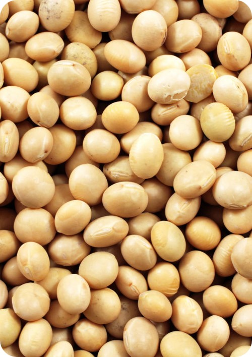
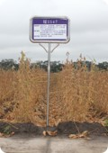
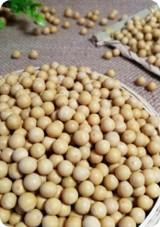
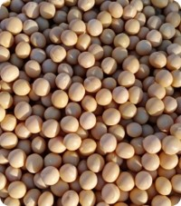
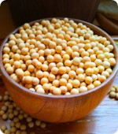

layout: true class: typo, typo-selection --- background-image: url(pictures/cover.jpg) .abs-layout.p-m.top-31.left-0.width-100.oc-bg-white.opacity-60.center[ # 大豆智慧农场设计方案 ] --- background-image: linear-gradient(135deg, #f0f4f8 0%, #e8f5e9 25%, #f1f8e9 50%, #fffde7 75%, #fafafa 100%) class: nord-light, center, middle .ri-map-pin-line.icon-top.nord11.font-xxl[] # .letter-spacing-20[智慧选址] <small>.letter-spacing-50[天时地利人和]</small> .rect.round-lg.nord11.width-70[ .rect.m-0.p-0[ .font-md[ .ri-landscape-line.icon-inline.nord11[] 黑土沃土 · .ri-sun-line.icon-inline.nord11[] 天时地利 · .ri-team-line.icon-inline.nord11[] 人和兴业 ] ] ] --- # 地理位置与交通优势 ### 黑龙江黑河市——世界黑土带核心区的战略选址 - **区位优势**：位于黑龙江省北部，小兴安岭向松嫩平原过渡带 - **交通便利**： - 距五大连池市区约60公里 - 距北安市约80公里 - 距黑河市区约150公里 - 202国道、北黑铁路连接省内主要城市 - **选址价值**：地处第三、四积温带，是东北地区大豆主产区的核心地带 --- # 得天独厚的自然条件 ### 寒温带季风气候与黑土资源的完美组合 .column-2.font-md.mb-m[ - **土壤条件（世界三大黑土带之一）**： - 土壤类型：黑土（占78%）和黑钙土（占20%） - 黑土层厚度：30-100厘米，平均40厘米以上 - 有机质含量：4%-11%，核心区域达7%以上 - pH值：6.0-6.9，呈弱酸性 - 养分丰富：含氮0.25%-0.37%，含磷0.17%-0.2%，含钾0.46%-0.59% - **气候条件**： - 年平均气温：-0.4℃至-1℃ - 年均日照：2568-2602小时 - 无霜期：108-112天（5月上旬至9月中旬） - 年均降水量：515-537毫米，70%集中在7-9月 - 有效积温：约2100-2200℃ ] - **水资源**：南阳河、火烧沟属讷谟尔河水系，水质良好，地下水丰富 --- # 农业基础与选址优势总结 ### 规模化现代农业的坚实基础 .column-2.font-md.mb-m[ - **规模优势**： - 辖区总面积：45.1万亩 - 耕地面积：24.49万亩（约15238公顷） - 优质耕地连片成方，规模效应显著 - **机械化水平**： - 农机总动力：2.62万千瓦 - 田间综合机械化程度：98%以上 - 配套农机具：755台套，包括53台大中型拖拉机 ] - **选址优势总结**： - **天时**：寒温带大陆性气候，光照充足，昼夜温差大，雨热同季 - **地利**：世界三大黑土带核心区，黑土层深厚，有机质丰富 - **人和**：近70年农垦历史，农业管理经验丰富，机械化率超99.8% --- background-image: linear-gradient(135deg, #f0f4f8 0%, #e8f5e9 25%, #f1f8e9 50%, #fffde7 75%, #fafafa 100%) class: nord-light, center, middle .ri-seedling-line.icon-top.nord14.font-xxl[] # .letter-spacing-20[智慧品种] <small>.letter-spacing-50[良种适配科学选育]</small> .rect.round-lg.nord14.width-70[ .rect.m-0.p-0[ .font-md[ .ri-microscope-line.icon-inline.nord14[] 科学育种 · .ri-exchange-line.icon-inline.nord14[] 良种适配 · .ri-settings-line.icon-inline.nord14[] 智能选育 ] ] ] --- # 东北大豆品种的独特性 ### 适应短日照寒冷气候的专用品种体系 - **东北地区独特性**： - 短日照、冬季寒冷、无霜期短 - 品种需选育早熟、极早熟、超早熟类型 - 明显区别于我国其他主要大豆产区 - **适合集约化种植的核心特征**： <div class="vue"> <div class="row q-gutter-xs justify-center" style="font-size:11px;"> <q-card flat bordered style="max-width: 160px;"> <q-card-section class="bg-green-1 q-pa-sm"> <div class="text-subtitle1 text-green-8">株型紧凑</div> <div class="text-caption text-green-6">适合密植</div> </q-card-section> <q-card-section class="q-pa-sm"> 植株收敛、叶片上举，节间短重心低，每亩2.5万株以上密度仍能保持高产 </q-card-section> </q-card> <q-card flat bordered style="max-width: 160px;"> <q-card-section class="bg-blue-1 q-pa-sm"> <div class="text-subtitle1 text-blue-8">茎秆坚韧</div> <div class="text-caption text-blue-6">高抗倒伏</div> </q-card-section> <q-card-section class="q-pa-sm"> 茎秆粗壮机械强度高，根系发达抓地力强 </q-card-section> </q-card> <q-card flat bordered style="max-width: 160px;"> <q-card-section class="bg-orange-1 q-pa-sm"> <div class="text-subtitle1 text-orange-8">结荚优良</div> <div class="text-caption text-orange-6">便于机收</div> </q-card-section> <q-card-section class="q-pa-sm"> 底荚高10-15cm，成熟后不易炸荚，结荚集中于中上部 </q-card-section> </q-card> <q-card flat bordered style="max-width: 160px;"> <q-card-section class="bg-purple-1 q-pa-sm"> <div class="text-subtitle1 text-purple-8">成熟一致</div> <div class="text-caption text-purple-6">脱水迅速</div> </q-card-section> <q-card-section class="q-pa-sm"> 田间群体成熟度一致，籽粒脱水快(≤18%)，降低破碎率与烘干成本 </q-card-section> </q-card> </div> </div> --- # 黑河市地理条件与品种要求 ### 第三、四积温带的品种适配策略 - **黑河市地理条件**： - **地理位置**：地处黑龙江省北部，主要位于第三、四积温带 - **气候特征**：寒温带大陆性季风气候，夏季光照长、昼夜温差大，冬季寒冷漫长 - **土壤条件**：世界三大黑土带核心区，土壤肥沃 - **品种要求**： - 适应中早熟类型 - 耐低温、抗逆性强 - 适合机械化收获 --- # 主推品种对比与选择 <div class="vue"> <div class="row q-gutter-xs justify-center" style="font-size:11px;"> <q-card flat bordered style="max-width: 180px;"> <p></p> <q-card-section class="q-pa-sm"> <div class="text-subtitle1 text-orange-8">合农71</div> <div class="text-caption text-grey-7">中熟(2600℃)</div> <div class="text-caption">高产广适，适合南部积温较高区域，北部风险大</div> </q-card-section> </q-card> <q-card flat bordered style="max-width: 180px;"> <p></p> <q-card-section class="q-pa-sm"> <div class="text-subtitle1 text-blue-8">绥农52</div> <div class="text-caption text-grey-7">中熟(第二积温带)</div> <div class="text-caption">高蛋白，熟期偏晚，不适配黑河大部分地区</div> </q-card-section> </q-card> <q-card flat bordered style="max-width: 180px;"> <p></p> <q-card-section class="bg-green-1 q-pa-sm"> <div class="text-subtitle1 text-green-8">东生89 .nord14[★优选]</div> <div class="text-caption text-green-6">中早熟，矮秆耐密超高产</div> <div class="text-caption">熟期适配，增产潜力巨大，是优选品种</div> </q-card-section> </q-card> </div> <div class="row q-gutter-xs justify-center q-mt-xs" style="font-size:11px;"> <q-card flat bordered style="max-width: 180px;"> <p></p> <q-card-section class="bg-blue-1 q-pa-sm"> <div class="text-subtitle1 text-blue-8">黑科132 .nord14[★理想]</div> <div class="text-caption text-blue-6">早熟(2250℃)，耐密稳产</div> <div class="text-caption">完全适配第三积温带，北部理想选择</div> </q-card-section> </q-card> <q-card flat bordered style="max-width: 180px;"> <p></p> <q-card-section class="q-pa-sm"> <div class="text-subtitle1 text-purple-8">脉育511</div> <div class="text-caption text-grey-7">耐除草剂高油</div> <div class="text-caption">技术优势突出，需验证熟期</div> </q-card-section> </q-card> </div> </div> - **东生89**：凭借超高产潜力，适合作为**核心推广品种** - **黑科132**：以早熟和稳产特性，可作为**北部地区主栽品种** --- background-image: linear-gradient(135deg, #f0f4f8 0%, #e8f5e9 25%, #f1f8e9 50%, #fffde7 75%, #fafafa 100%) class: nord-light, center, middle .ri-plant-line.icon-top.nord12.font-xxl[] # .letter-spacing-20[智慧种植] <small>.letter-spacing-50[全程数字化管理]</small> .rect.round-lg.nord12.width-70[ .rect.m-0.p-0[ .font-md[ .ri-calendar-check-line.icon-inline.nord12[] 数据驱动 · .ri-drone-line.icon-inline.nord12[] 精准田管 · .ri-bug-line.icon-inline.nord12[] 智能监测 ] ] ] --- # 播前准备与播种期（2-5月） ### 数据驱动的精准播种体系 - **播前准备（2-4月）**： - 土壤化验与电子档案建立 - 按土壤报告制定种子和施肥处方 - 设备检修：播种机、施肥机、无人机、传感器、干燥设备 - 物资准备：种子、基肥、农药、备件 - 人员培训：机手与平台操作人员 .column-2.font-md.mb-m[ - **整地与基肥（4月底-5月初）**： - 地表解冻后处方浅耕或免耕松土 - 修建排水沟和水闸 - 北斗导航机具变量施肥，记录作业轨迹 - **播种（5月）**： - RTK/北斗导航精量播种机按设定行距和深度播种 - 种子包衣或生物拌种 - 作业数据实时上传平台 ] --- # 苗期与花期管理（5-7月） ### 无人机监测与变量施药的智能田管 .column-2.font-md.mb-m[ - **出苗与首期监测（播后1-2周）**： - 无人机+地面传感器巡查出苗率和墒情 - 缺苗斑块及时补播或局部灌溉 - 早期病害小范围处理 - **苗期管理（播后2-6周）**： - 处方点施或条施第一次追肥 - 机械中耕松土或局部喷药除草 - 每周无人机巡查，处方分区防治病虫 ] - **开花结荚期（6-7月）**： - 土壤墒情传感器指导灌溉 - 遥感生成处方图定点喷药 - 机械松土防倒伏 - **目标**：水够、病少、养分到位保好结荚 --- # 收获与产后处理（8-9月） ### 精准收获与智能仓储 .column-2.font-md.mb-m[ - **乳熟与促熟（8月）**： - 逐步减少灌水促成熟 - 监测含水率与倒伏情况 - 遇台风暴雨提前安排收割机具 - **收割（8月底-9月）**： - 根据含水率和遥感判断最佳收割窗口 - 北斗/RTK联合收割机分区网格化收割 - 调整机具参数减少破碎脱粒损失 - 含水偏高的批次先送干燥再入仓 - **初筛、干燥与智能储存**： - 场边初筛去泥杂、测含水 - 入库登记：批次、地块、含水、质检结果 - 仓内温湿传感器全天监控，自动通风或干燥防霉变 - **质量检验与售卖（9月起）**： - 理化检验：蛋白、含油、杂质等 - 对接订单粮或加工厂 - 生成溯源码，便于追溯与结算 ] --- # 全程数字化与应急管理 ### 数据闭环与风险防控体系 .column-2.font-md.mb-m[ - **并行数据监测（全季持续）**： - 每周/每10天无人机+传感器巡查 - 数据实时上传平台 - 大数据产业互联网驱动全产业链数字化升级 - **设备与气象管理**： - 设备维护和备用机具保障 - 接入气象预警系统 - 准备应急灌溉或排水方案 - **应急管理体系**： - **晚霜**：顺延播种或局部防护 - **干旱**：应急灌溉启动 - **虫害暴发**：处方图快速响应 - **台风**：提前收割安排 - **智慧农业综合监测与决策支持**： - 大屏界面实时监控 - 智能分析与决策支持 ] --- background-image: linear-gradient(135deg, #f0f4f8 0%, #e8f5e9 25%, #f1f8e9 50%, #fffde7 75%, #fafafa 100%) class: nord-light, center, middle .ri-money-cny-circle-line.icon-top.nord13.font-xxl[] # .letter-spacing-20[智慧收益] <small>.letter-spacing-50[投资回报与可持续运营]</small> .rect.round-lg.nord13.width-70[ .rect.m-0.p-0[ .font-md[ .ri-bar-chart-box-line.icon-inline.nord13[] 降本增效 · .ri-line-chart-line.icon-inline.nord13[] 投资回报 · .ri-safe-line.icon-inline.nord13[] 稳健运营 ] ] ] --- # 智慧农场投资方案 <div style="margin-top: 20px;"> <table style="width: 100%; border-collapse: collapse; font-size: 15px; box-shadow: 0 4px 12px rgba(0,0,0,0.1); border-radius: 8px; overflow: hidden;"> <thead> <tr style="background: linear-gradient(135deg, #1A4008 0%, #2E5D18 100%);"> <th colspan="4" style="padding: 18px; text-align: center; color: #8B6914; font-weight: bold; font-size: 18px; text-shadow: 2px 2px 4px rgba(0,0,0,0.5);"> 1000亩东北春大豆智慧农场 · 项目总投资 372.8万元 </th> </tr> <tr style="background: #F5F0E1;"> <th style="padding: 14px; text-align: center; border-bottom: 3px solid #8B6914; color: #3D2914; width: 20%; font-weight: bold; font-size: 15px;">投资类别</th> <th style="padding: 14px; text-align: center; border-bottom: 3px solid #8B6914; color: #3D2914; width: 18%; font-weight: bold; font-size: 15px;">金额（万元）</th> <th style="padding: 14px; text-align: center; border-bottom: 3px solid #8B6914; color: #3D2914; width: 15%; font-weight: bold; font-size: 15px;">占比</th> <th style="padding: 14px; text-align: left; border-bottom: 3px solid #8B6914; color: #3D2914; font-weight: bold; font-size: 15px;">主要设备/内容</th> </tr> </thead> <tbody> <tr style="background: #FEFDF8;"> <td style="padding: 14px; border-bottom: 2px solid #E8E0D0; text-align: center; font-weight: bold; color: #8B6914; font-size: 15px;">智能农机</td> <td style="padding: 14px; border-bottom: 2px solid #E8E0D0; text-align: right; font-weight: bold; color: #2E5D18; font-size: 16px;">135.0</td> <td style="padding: 14px; border-bottom: 2px solid #E8E0D0; text-align: center; color: #5D4E37; font-weight: bold;">36.2%</td> <td style="padding: 14px; border-bottom: 2px solid #E8E0D0; color: #4A4035; line-height: 1.5;">播种机2台 + 收割机1台 + 拖拉机1台 + 运输车</td> </tr> <tr style="background: #F9F7F0;"> <td style="padding: 14px; border-bottom: 2px solid #E8E0D0; text-align: center; font-weight: bold; color: #8B6914; font-size: 15px;">无人机植保</td> <td style="padding: 14px; border-bottom: 2px solid #E8E0D0; text-align: right; font-weight: bold; color: #2E5D18; font-size: 16px;">32.0</td> <td style="padding: 14px; border-bottom: 2px solid #E8E0D0; text-align: center; color: #5D4E37; font-weight: bold;">8.6%</td> <td style="padding: 14px; border-bottom: 2px solid #E8E0D0; color: #4A4035; line-height: 1.5;">极飞P150无人机2架 + 智能喷药机1台</td> </tr> <tr style="background: #FEFDF8;"> <td style="padding: 14px; border-bottom: 2px solid #E8E0D0; text-align: center; font-weight: bold; color: #8B6914; font-size: 15px;">监测感知</td> <td style="padding: 14px; border-bottom: 2px solid #E8E0D0; text-align: right; font-weight: bold; color: #2E5D18; font-size: 16px;">22.0</td> <td style="padding: 14px; border-bottom: 2px solid #E8E0D0; text-align: center; color: #5D4E37; font-weight: bold;">5.9%</td> <td style="padding: 14px; border-bottom: 2px solid #E8E0D0; color: #4A4035; line-height: 1.5;">土壤传感器20套 + 气象站2套 + 监控10套</td> </tr> <tr style="background: #F9F7F0;"> <td style="padding: 14px; border-bottom: 2px solid #E8E0D0; text-align: center; font-weight: bold; color: #8B6914; font-size: 15px;">基础设施</td> <td style="padding: 14px; border-bottom: 2px solid #E8E0D0; text-align: right; font-weight: bold; color: #2E5D18; font-size: 16px;">116.0</td> <td style="padding: 14px; border-bottom: 2px solid #E8E0D0; text-align: center; color: #5D4E37; font-weight: bold;">31.1%</td> <td style="padding: 14px; border-bottom: 2px solid #E8E0D0; color: #4A4035; line-height: 1.5;">智能灌溉控制器50套 + 仓储机库管网</td> </tr> <tr style="background: #FEFDF8;"> <td style="padding: 14px; border-bottom: 3px solid #C4A35A; text-align: center; font-weight: bold; color: #8B6914; font-size: 15px;">软件及实施</td> <td style="padding: 14px; border-bottom: 3px solid #C4A35A; text-align: right; font-weight: bold; color: #2E5D18; font-size: 16px;">67.8</td> <td style="padding: 14px; border-bottom: 3px solid #C4A35A; text-align: center; color: #5D4E37; font-weight: bold;">18.2%</td> <td style="padding: 14px; border-bottom: 3px solid #C4A35A; color: #4A4035; line-height: 1.5;">农场管理平台 + 设计培训 + 预备费</td> </tr> <tr style="background: linear-gradient(135deg, #8B6914 0%, #C4A35A 100%);"> <td style="padding: 16px; text-align: center; font-weight: bold; color: #FFFBE6; font-size: 16px; text-shadow: 1px 1px 2px rgba(0,0,0,0.3);">合计</td> <td style="padding: 16px; text-align: right; font-weight: bold; color: #FFFBE6; font-size: 20px; text-shadow: 1px 1px 2px rgba(0,0,0,0.3);">372.8</td> <td style="padding: 16px; text-align: center; font-weight: bold; color: #FFFBE6; font-size: 16px; text-shadow: 1px 1px 2px rgba(0,0,0,0.3);">100%</td> <td style="padding: 16px; color: #FFFBE6; font-size: 15px; text-shadow: 1px 1px 2px rgba(0,0,0,0.3);">1000亩东北春大豆智慧农场完整解决方案</td> </tr> </tbody> </table> </div> --- # 智慧农场投资方案 ### 配套资源与人员配置 <div style="display: flex; justify-content: space-around; align-items: center; margin-top: 20px;"> <!-- 种子 --> <div style="text-align: center; padding: 20px;"> <div style="font-size: 48px; color: #5D4037; margin-bottom: 10px;"> <i class="ri-disc-line"></i> </div> <div style="font-size: 28px; font-weight: bold; color: #2E7D32;">6-8吨</div> <div style="font-size: 14px; color: #666;">种子用量</div> <div style="font-size: 12px; color: #999;">6-8公斤/亩 × 1000亩</div> </div> <!-- 土地 --> <div style="text-align: center; padding: 20px;"> <div style="font-size: 48px; color: #795548; margin-bottom: 10px;"> <i class="ri-landscape-line"></i> </div> <div style="font-size: 28px; font-weight: bold; color: #E65100;">55万/年</div> <div style="font-size: 14px; color: #666;">土地租金</div> <div style="font-size: 12px; color: #999;">550元/亩 × 1000亩</div> </div> <!-- 人员 --> <div style="text-align: center; padding: 20px;"> <div style="font-size: 48px; color: #1565C0; margin-bottom: 10px;"> <i class="ri-team-line"></i> </div> <div style="font-size: 28px; font-weight: bold; color: #0D47A1;">5人团队</div> <div style="font-size: 14px; color: #666;">人员配置</div> <div style="font-size: 12px; color: #999;">精简高效</div> </div> </div> <!-- 人员图标展示 --> <div style="display: flex; justify-content: center; align-items: center; margin-top: 30px; gap: 30px;"> <div style="text-align: center;"> <div style="width: 60px; height: 60px; background: linear-gradient(135deg, #667eea 0%, #764ba2 100%); border-radius: 50%; display: flex; align-items: center; justify-content: center; margin: 0 auto;"> <i class="ri-user-star-line" style="font-size: 28px; color: white;"></i> </div> <div style="font-size: 12px; margin-top: 8px;">农场经理</div> </div> <div style="text-align: center;"> <div style="width: 60px; height: 60px; background: linear-gradient(135deg, #f093fb 0%, #f5576c 100%); border-radius: 50%; display: flex; align-items: center; justify-content: center; margin: 0 auto;"> <i class="ri-computer-line" style="font-size: 28px; color: white;"></i> </div> <div style="font-size: 12px; margin-top: 8px;">技术专员</div> </div> <div style="text-align: center;"> <div style="width: 60px; height: 60px; background: linear-gradient(135deg, #4facfe 0%, #00f2fe 100%); border-radius: 50%; display: flex; align-items: center; justify-content: center; margin: 0 auto;"> <i class="ri-flight-takeoff-line" style="font-size: 28px; color: white;"></i> </div> <div style="font-size: 12px; margin-top: 8px;">无人机手</div> </div> <div style="text-align: center;"> <div style="width: 60px; height: 60px; background: linear-gradient(135deg, #43e97b 0%, #38f9d7 100%); border-radius: 50%; display: flex; align-items: center; justify-content: center; margin: 0 auto;"> <i class="ri-truck-line" style="font-size: 28px; color: white;"></i> </div> <div style="font-size: 12px; margin-top: 8px;">农机手</div> </div> <div style="text-align: center;"> <div style="width: 60px; height: 60px; background: linear-gradient(135deg, #fa709a 0%, #fee140 100%); border-radius: 50%; display: flex; align-items: center; justify-content: center; margin: 0 auto;"> <i class="ri-walk-line" style="font-size: 28px; color: white;"></i> </div> <div style="font-size: 12px; margin-top: 8px;">田间巡查</div> </div> </div> --- # 传统种植 vs 智慧农场效益对比 <div style="display: flex; flex-direction: column; gap: 15px;"> <!-- 成本对比 --> <div> <svg viewBox="0 0 900 260" style="width: 100%; max-width: 900px; margin: 0 auto; display: block;"> <!-- 背景 --> <rect x="0" y="0" width="900" height="260" fill="#fafafa" rx="8"/> <!-- 标题 --> <text x="450" y="22" text-anchor="middle" font-size="14" font-weight="bold" fill="#333">成本对比：140.5万 → 103万（-26.7%）</text> <!-- 图例 --> <rect x="320" y="32" width="12" height="12" fill="#FF6B6B"/> <text x="340" y="42" font-size="10" fill="#666">传统种植</text> <rect x="430" y="32" width="12" height="12" fill="#4ECDC4"/> <text x="450" y="42" font-size="10" fill="#666">智慧农场</text> <!-- 水平网格线 --> <line x1="70" y1="210" x2="850" y2="210" stroke="#eee" stroke-width="1"/> <line x1="70" y1="170" x2="850" y2="170" stroke="#eee" stroke-width="1"/> <line x1="70" y1="130" x2="850" y2="130" stroke="#eee" stroke-width="1"/> <line x1="70" y1="90" x2="850" y2="90" stroke="#eee" stroke-width="1"/> <!-- 地租 --> <rect x="80" y="115" width="28" height="95" fill="#FF6B6B" rx="2"/> <rect x="112" y="115" width="28" height="95" fill="#4ECDC4" rx="2"/> <text x="110" y="225" text-anchor="middle" font-size="9" fill="#666">地租</text> <text x="94" y="108" text-anchor="middle" font-size="8" fill="#FF6B6B">55</text> <text x="126" y="108" text-anchor="middle" font-size="8" fill="#4ECDC4">55</text> <!-- 农资 --> <rect x="160" y="158" width="28" height="52" fill="#FF6B6B" rx="2"/> <rect x="192" y="168" width="28" height="42" fill="#4ECDC4" rx="2"/> <text x="190" y="225" text-anchor="middle" font-size="9" fill="#666">农资</text> <text x="174" y="151" text-anchor="middle" font-size="8" fill="#FF6B6B">25.5</text> <text x="206" y="161" text-anchor="middle" font-size="8" fill="#4ECDC4">21</text> <!-- 机械 --> <rect x="240" y="170" width="28" height="40" fill="#FF6B6B" rx="2"/> <rect x="272" y="178" width="28" height="32" fill="#4ECDC4" rx="2"/> <text x="270" y="225" text-anchor="middle" font-size="9" fill="#666">机械</text> <text x="254" y="163" text-anchor="middle" font-size="8" fill="#FF6B6B">15</text> <text x="286" y="171" text-anchor="middle" font-size="8" fill="#4ECDC4">12</text> <!-- 人工 --> <rect x="320" y="150" width="28" height="60" fill="#FF6B6B" rx="2"/> <rect x="352" y="186" width="28" height="24" fill="#4ECDC4" rx="2"/> <text x="350" y="225" text-anchor="middle" font-size="9" fill="#666">人工</text> <text x="334" y="143" text-anchor="middle" font-size="8" fill="#FF6B6B">20</text> <text x="366" y="179" text-anchor="middle" font-size="8" fill="#4ECDC4">8</text> <!-- 水电 --> <rect x="400" y="190" width="28" height="20" fill="#FF6B6B" rx="2"/> <rect x="432" y="194" width="28" height="16" fill="#4ECDC4" rx="2"/> <text x="430" y="225" text-anchor="middle" font-size="9" fill="#666">水电</text> <!-- 管理 --> <rect x="480" y="150" width="28" height="60" fill="#FF6B6B" rx="2"/> <rect x="512" y="200" width="28" height="10" fill="#4ECDC4" rx="2"/> <text x="510" y="225" text-anchor="middle" font-size="9" fill="#666">管理</text> <text x="494" y="143" text-anchor="middle" font-size="8" fill="#FF6B6B">20</text> <text x="526" y="193" text-anchor="middle" font-size="8" fill="#4ECDC4">3</text> <!-- 总计 --> <rect x="600" y="108" width="35" height="102" fill="#FF6B6B" rx="3" opacity="0.8"/> <rect x="645" y="138" width="35" height="72" fill="#4ECDC4" rx="3" opacity="0.8"/> <text x="640" y="225" text-anchor="middle" font-size="10" font-weight="bold" fill="#333">总计</text> <text x="617" y="100" text-anchor="middle" font-size="9" fill="#FF6B6B">140.5</text> <text x="662" y="130" text-anchor="middle" font-size="9" fill="#4ECDC4">103</text> <!-- 节省 --> <text x="740" y="170" text-anchor="middle" font-size="11" fill="#27ae60" font-weight="bold">↓37.5万</text> </svg> </div> <!-- 收入对比 --> <div style="display: flex; justify-content: space-between; align-items: flex-start; gap: 20px;"> <!-- 左侧：收入对比 --> <div style="flex: 1;"> <svg viewBox="0 0 420 320" style="width: 100%; max-width: 420px;"> <!-- 背景 --> <rect x="0" y="0" width="420" height="320" fill="#f8f9fa" rx="8"/> <!-- 标题 --> <text x="210" y="25" text-anchor="middle" font-size="14" font-weight="bold" fill="#333">年收入对比（万元）</text> <text x="210" y="42" text-anchor="middle" font-size="11" fill="#666">132.2万 → 159.1万 (+20.3%)</text> <!-- 收入构成图例 --> <rect x="70" y="55" width="12" height="12" fill="#4CAF50"/> <text x="88" y="65" font-size="10" fill="#666">大豆销售</text> <rect x="150" y="55" width="12" height="12" fill="#FF9800"/> <text x="168" y="65" font-size="10" fill="#666">补贴收入</text> <rect x="230" y="55" width="12" height="12" fill="#2196F3"/> <text x="248" y="65" font-size="10" fill="#666">副产品</text> <!-- Y轴刻度 --> <line x1="70" y1="80" x2="70" y2="260" stroke="#ddd" stroke-width="1"/> <text x="65" y="260" text-anchor="end" font-size="9" fill="#999">0</text> <text x="65" y="210" text-anchor="end" font-size="9" fill="#999">50</text> <text x="65" y="160" text-anchor="end" font-size="9" fill="#999">100</text> <text x="65" y="110" text-anchor="end" font-size="9" fill="#999">150</text> <!-- 水平网格线 --> <line x1="70" y1="210" x2="350" y2="210" stroke="#eee" stroke-width="1"/> <line x1="70" y1="160" x2="350" y2="160" stroke="#eee" stroke-width="1"/> <line x1="70" y1="110" x2="350" y2="110" stroke="#eee" stroke-width="1"/> <!-- 传统种植 - 堆叠柱状图 (从底部向上堆叠) --> <!-- 总计132.2 = 大豆95.6 + 补贴36.6 + 副产品0 --> <!-- 大豆销售 (底部) --> <rect x="90" y="167.6" width="60" height="92.4" fill="#4CAF50" rx="3"/> <text x="120" y="215" text-anchor="middle" font-size="9" fill="white">95.6</text> <!-- 补贴收入 (中间) --> <rect x="90" y="127.2" width="60" height="40.4" fill="#FF9800" rx="3"/> <text x="120" y="150" text-anchor="middle" font-size="9" fill="white">36.6</text> <!-- 标签 --> <text x="120" y="280" text-anchor="middle" font-size="12" font-weight="bold" fill="#FF6B6B">传统种植</text> <text x="120" y="295" text-anchor="middle" font-size="11" fill="#FF6B6B">132.2万</text> <!-- 智慧农场 - 堆叠柱状图 --> <!-- 总计159.1 = 大豆117.5 + 补贴36.6 + 副产品5.0 --> <!-- 大豆销售 (底部) --> <rect x="200" y="142.5" width="60" height="117.5" fill="#4CAF50" rx="3"/> <text x="230" y="205" text-anchor="middle" font-size="9" fill="white">117.5</text> <!-- 补贴收入 (中间) --> <rect x="200" y="102.3" width="60" height="40.2" fill="#FF9800" rx="3"/> <text x="230" y="125" text-anchor="middle" font-size="9" fill="white">36.6</text> <!-- 副产品 (顶部) --> <rect x="200" y="87.3" width="60" height="15" fill="#2196F3" rx="3"/> <text x="230" y="97" text-anchor="middle" font-size="8" fill="white">5.0</text> <!-- 标签 --> <text x="230" y="280" text-anchor="middle" font-size="12" font-weight="bold" fill="#4ECDC4">智慧农场</text> <text x="230" y="295" text-anchor="middle" font-size="11" fill="#4ECDC4">159.1万</text> <!-- 增长箭头 --> <path d="M 165 140 L 185 130" stroke="#27ae60" stroke-width="2" fill="none" marker-end="url(#arrowhead)"/> <defs> <marker id="arrowhead" markerWidth="10" markerHeight="7" refX="9" refY="3.5" orient="auto"> <polygon points="0 0, 10 3.5, 0 7" fill="#27ae60"/> </marker> </defs> <text x="185" y="120" text-anchor="middle" font-size="10" fill="#27ae60" font-weight="bold">+20.3%</text> </svg> </div> <!-- 右侧：利润对比 --> <div style="flex: 1;"> <svg viewBox="0 0 420 320" style="width: 100%; max-width: 420px;"> <!-- 背景 --> <rect x="0" y="0" width="420" height="320" fill="#f8f9fa" rx="8"/> <!-- 标题 --> <text x="210" y="25" text-anchor="middle" font-size="14" font-weight="bold" fill="#333">利润对比（万元/年）</text> <text x="210" y="42" text-anchor="middle" font-size="11" fill="#666">从亏损到盈利的转变</text> <!-- 中心线（盈亏平衡点） --> <line x1="50" y1="170" x2="370" y2="170" stroke="#666" stroke-width="2" stroke-dasharray="5,5"/> <text x="375" y="174" font-size="9" fill="#666">盈亏平衡</text> <!-- 传统种植 - 亏损 --> <text x="130" y="80" text-anchor="middle" font-size="12" font-weight="bold" fill="#e74c3c">传统种植</text> <rect x="80" y="170" width="100" height="60" fill="#e74c3c" rx="5" opacity="0.8"/> <text x="130" y="205" text-anchor="middle" font-size="14" font-weight="bold" fill="white">-8.3万</text> <text x="130" y="245" text-anchor="middle" font-size="10" fill="#e74c3c">亏损状态</text> <!-- 箭头 --> <path d="M 200 170 Q 210 100 230 130" stroke="#3498db" stroke-width="3" fill="none" marker-end="url(#arrowhead2)"/> <defs> <marker id="arrowhead2" markerWidth="10" markerHeight="7" refX="9" refY="3.5" orient="auto"> <polygon points="0 0, 10 3.5, 0 7" fill="#3498db"/> </marker> </defs> <text x="215" y="110" text-anchor="middle" font-size="11" fill="#3498db" font-weight="bold">智慧升级</text> <!-- 智慧农场 - 盈利 --> <text x="290" y="80" text-anchor="middle" font-size="12" font-weight="bold" fill="#27ae60">智慧农场</text> <rect x="240" y="110" width="100" height="60" fill="#27ae60" rx="5" opacity="0.8"/> <text x="290" y="145" text-anchor="middle" font-size="14" font-weight="bold" fill="white">+16.1万</text> <text x="290" y="95" text-anchor="middle" font-size="10" fill="#27ae60">盈利状态</text> <!-- 现金流 --> <rect x="110" y="260" width="200" height="40" fill="#3498db" rx="5" opacity="0.9"/> <text x="210" y="278" text-anchor="middle" font-size="11" fill="white">年经营现金流</text> <text x="210" y="293" text-anchor="middle" font-size="14" font-weight="bold" fill="white">56.1万元</text> <!-- 改善幅度 --> <text x="210" y="200" text-anchor="middle" font-size="12" fill="#27ae60" font-weight="bold">扭亏为盈 +24.4万</text> </svg> </div> </div> </div> --- # 投资回报与财务评价 <div style="display: flex; gap: 20px; margin-top: 20px;"> <!-- 左侧：核心财务指标 --> <div style="flex: 1;"> <table style="width: 100%; border-collapse: collapse; font-size: 14px;"> <thead> <tr style="background: linear-gradient(135deg, #667eea 0%, #764ba2 100%);"> <th colspan="2" style="padding: 12px; text-align: center; color: white; font-weight: bold; border-radius: 8px 8px 0 0;">核心财务指标</th> </tr> </thead> <tbody> <tr style="background: #f8f9fa;"> <td style="padding: 10px; border-bottom: 1px solid #eee; color: #666;">项目总投资</td> <td style="padding: 10px; border-bottom: 1px solid #eee; text-align: right; font-weight: bold; color: #333;">372.8万元</td> </tr> <tr style="background: white;"> <td style="padding: 10px; border-bottom: 1px solid #eee; color: #666;">年净利润</td> <td style="padding: 10px; border-bottom: 1px solid #eee; text-align: right; font-weight: bold; color: #27ae60;">+16.1万元</td> </tr> <tr style="background: #f8f9fa;"> <td style="padding: 10px; border-bottom: 1px solid #eee; color: #666;">年经营现金流</td> <td style="padding: 10px; border-bottom: 1px solid #eee; text-align: right; font-weight: bold; color: #3498db;">56.1万元</td> </tr> <tr style="background: white;"> <td style="padding: 10px; border-bottom: 1px solid #eee; color: #666;">静态投资回收期</td> <td style="padding: 10px; border-bottom: 1px solid #eee; text-align: right; font-weight: bold; color: #333;">6.6年</td> </tr> <tr style="background: #f8f9fa;"> <td style="padding: 10px; border-bottom: 1px solid #eee; color: #666;">内部收益率IRR</td> <td style="padding: 10px; border-bottom: 1px solid #eee; text-align: right; font-weight: bold; color: #e74c3c;">14.8%</td> </tr> <tr style="background: white;"> <td style="padding: 10px; color: #666;">净现值NPV（i=8%）</td> <td style="padding: 10px; text-align: right; font-weight: bold; color: #27ae60;">+168万元</td> </tr> </tbody> </table> </div> <!-- 右侧：长期收益 --> <div style="flex: 1;"> <table style="width: 100%; border-collapse: collapse; font-size: 14px;"> <thead> <tr style="background: linear-gradient(135deg, #11998e 0%, #38ef7d 100%);"> <th colspan="2" style="padding: 12px; text-align: center; color: white; font-weight: bold; border-radius: 8px 8px 0 0;">15年长期收益预测</th> </tr> </thead> <tbody> <tr style="background: #f8f9fa;"> <td style="padding: 10px; border-bottom: 1px solid #eee; color: #666;">累计净利润</td> <td style="padding: 10px; border-bottom: 1px solid #eee; text-align: right; font-weight: bold; color: #27ae60;">241.5万元</td> </tr> <tr style="background: white;"> <td style="padding: 10px; border-bottom: 1px solid #eee; color: #666;">累计经营现金流</td> <td style="padding: 10px; border-bottom: 1px solid #eee; text-align: right; font-weight: bold; color: #3498db;">841.5万元</td> </tr> <tr style="background: #f8f9fa;"> <td style="padding: 10px; border-bottom: 1px solid #eee; color: #666;">现金流转正年份</td> <td style="padding: 10px; border-bottom: 1px solid #eee; text-align: right; font-weight: bold; color: #333;">第7年</td> </tr> <tr style="background: white;"> <td style="padding: 10px; border-bottom: 1px solid #eee; color: #666;">投资回报倍数</td> <td style="padding: 10px; border-bottom: 1px solid #eee; text-align: right; font-weight: bold; color: #e74c3c;">2.26倍</td> </tr> <tr style="background: #f8f9fa;"> <td style="padding: 10px; border-bottom: 1px solid #eee; color: #666;">年均收益率</td> <td style="padding: 10px; border-bottom: 1px solid #eee; text-align: right; font-weight: bold; color: #333;">15.1%</td> </tr> <tr style="background: white;"> <td style="padding: 10px; color: #666;">项目可行性</td> <td style="padding: 10px; text-align: right; font-weight: bold; color: #27ae60;">显著可行 ✓</td> </tr> </tbody> </table> </div> </div> <!-- IRR对比可视化 --> <div style="margin-top: 25px; text-align: center;"> <svg viewBox="0 0 800 120" style="width: 100%; max-width: 800px;"> <!-- 背景 --> <rect x="0" y="0" width="800" height="120" fill="#f8f9fa" rx="8"/> <!-- 标题 --> <text x="400" y="25" text-anchor="middle" font-size="14" font-weight="bold" fill="#333">IRR对比（农业基准 vs 本项目）</text> <!-- 农业基准 --> <text x="150" y="55" text-anchor="middle" font-size="11" fill="#666">农业基准</text> <rect x="100" y="65" width="100" height="30" fill="#bdc3c7" rx="3"/> <text x="150" y="85" text-anchor="middle" font-size="12" font-weight="bold" fill="white">8%</text> <!-- 本项目 --> <text x="350" y="55" text-anchor="middle" font-size="11" fill="#666" font-weight="bold">本项目</text> <rect x="260" y="65" width="180" height="30" fill="#27ae60" rx="3"/> <text x="350" y="85" text-anchor="middle" font-size="14" font-weight="bold" fill="white">14.8%</text> <!-- 优势标注 --> <text x="580" y="75" text-anchor="middle" font-size="13" fill="#27ae60" font-weight="bold">优于基准 85%</text> <text x="580" y="95" text-anchor="middle" font-size="11" fill="#666">显著可行项目</text> <!-- 箭头 --> <path d="M 450 80 L 520 80" stroke="#27ae60" stroke-width="2" fill="none" marker-end="url(#arrowhead3)"/> <defs> <marker id="arrowhead3" markerWidth="10" markerHeight="7" refX="9" refY="3.5" orient="auto"> <polygon points="0 0, 10 3.5, 0 7" fill="#27ae60"/> </marker> </defs> </svg> </div> --- background-image: linear-gradient(135deg, #f0f4f8 0%, #e8f5e9 25%, #f1f8e9 50%, #fffde7 75%, #fafafa 100%) class: nord-light, center, middle .ri-government-line.icon-top.nord15.font-xxl[] # .letter-spacing-20[智慧政策] <small>.letter-spacing-50[国家战略到地方实践]</small> .rect.round-lg.nord15.width-70[ .rect.m-0.p-0[ .font-md[ .ri-global-line.icon-inline.nord15[] 国家战略 · .ri-map-pin-2-line.icon-inline.nord15[] 省级试点 · .ri-file-shield-line.icon-inline.nord15[] 黑土地保护 ] ] ] --- # 国家战略层面 ### 智慧农业——农业强国的战略制高点 - **政策框架**： - 已发布《智慧农业标准体系建设指南》 - 新增/实施标准**20项** - 关键技术突破：**104项**关键技术、**62项**整机装备 - **技术推广**： - 明确提到**"大豆智能设计育种"**为主推技术之一 - 已推介**16个**大田智慧农场典型场景案例 --- # 省级政策层面 ### 黑龙江省智慧农业实施方案 - **政策文件**： - 《黑龙江省智慧农业实施方案》 - **"人工智能+"**行动方案 - **试点示范**： - 已开展**多个无人农场试点** - 建三江、红星农场、友谊农场等 - **技术路径**： - 北斗导航+物联网+**"天空地"**一体化监测 --- # 黑土地保护制度 ### 全方位保护机制 - **专项行动**： - 哈尔滨市黑土地保护专项行动（源头管控+常态化巡查） - 北大荒《黑土地保护耕作技术规范》 - **保护机制**： - **"5+2"田长制** - **"三位一体"**保护机制 - **"六个替代"**+**"六个全覆盖"** - **科研支撑**： - 与生态环境部共建**黑土地保护实验室** --- # 基础设施现状 ### 100%覆盖率的坚实基础 - **网络通信**： - 行政村4G/光纤覆盖率：**100%** - 北大荒公路网密度：**50公里/百平方公里** - **导航定位**： - 北斗导航已规模化部署 - 建三江项目验证成功 --- # 技术应用现状 ### 已有技术积累与突破方向 - **已成熟应用**： - 北斗无人农机作业（耕、种、管、收） - 物联网监测、大数据平台 - **大豆专项突破**： - 大豆智能设计育种（技术突破） --- # 人才与培训现状 ### 庞大的人才培训体系 - **培训规模**： - 农民手机技能培训：**近4000万人次/年** - **人才计划**： - **"星乡村""星农人"**培育计划 - **农（牧、渔）场智慧赋能计划** --- # 关键结论 ### 政策可行性综合判断 | **维度** | **现状判断** | **依据** | |----------|--------------|----------| | 政策支持 | 充分 | 国家+省两级政策明确，黑土地保护有法可依 | | 基础设施 | 成熟 | 4G全覆盖、北斗可用、公路完善 | | 人才基础 | 有基础 | 年培训近4000万人次 | - **项目可行性**：政策环境成熟，基础设施完善，技术路径清晰，具备实施条件